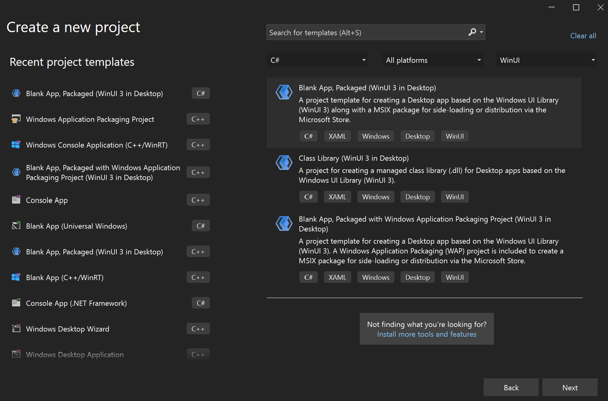
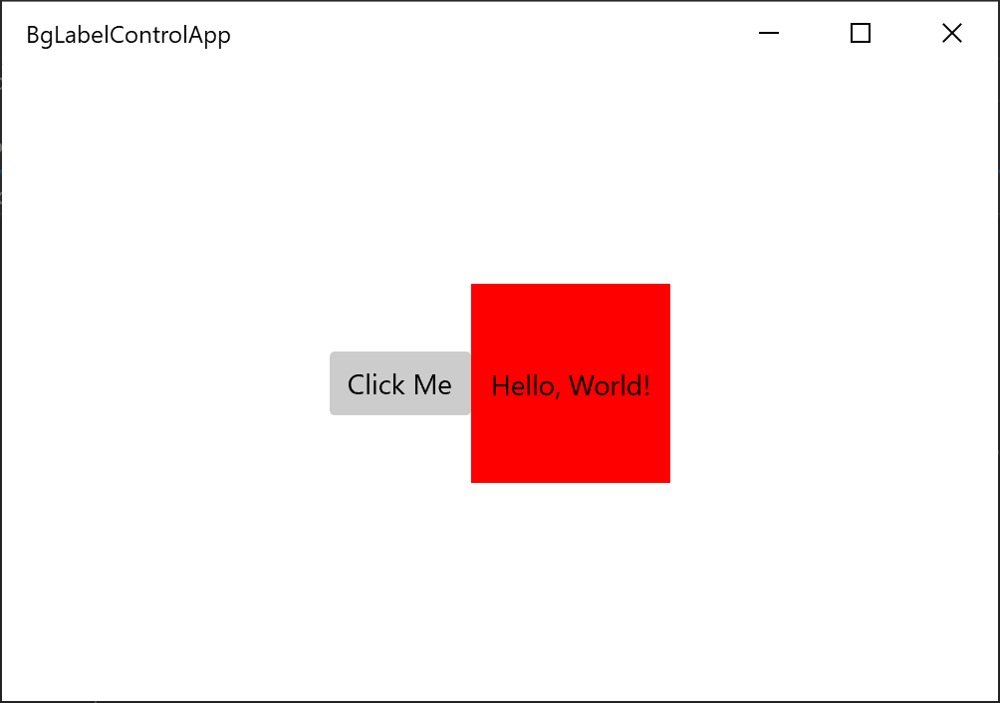

Build XAML controls with C#
This article walks you through creating a templated XAML control for WinUI 3 with C#. Templated controls inherit from Microsoft.UI.Xaml.Controls.Control and have visual structure and visual behavior that can be customized using XAML control templates.
To create standalone WinUI 3 components in C# for consumption from both C# and C++/WinRT apps, see the article Walkthrough: Create a C# component with WinUI 3 controls, and consume it from a C++ Windows App SDK application.
Prerequisites
- Set up your development environment—see Install tools for the Windows App SDK.
- Follow the instructions on how to Create your first WinUI 3 project.
Create a Blank App (BgLabelControlApp)
Begin by creating a new project in Microsoft Visual Studio. In the Create a new project dialog, select the Blank App, Packaged (WinUI 3 in Desktop) project template, making sure to select the C# language version. Set the project name to "BgLabelControlApp" so that the file names align with the code in the examples below.

Add a templated control to your app
To add a templated control, click the Project menu in the toolbar or right-click your project in Solution Explorer and select Add New Item . Under Visual C#->WinUI select the Custom Control (WinUI 3) template. Name the new control "BgLabelControl" and click Add.
Update the custom control C# file
In the C# file, BgLabelControl.cs, note that the constructor defines the DefaultStyleKey property for our control. This key identifies the default template that will be used if the consumer of the control doesn't explicitly specify a template. The key value is the type of our control. We will see this key in use later when we implement our generic template file.
public BgLabelControl()
{
this.DefaultStyleKey = typeof(BgLabelControl);
}
Our templated control will have a text label that can be set programmatically in code, in XAML, or via data binding. In order for the system to keep the text of our control's label up to date, it needs to be implemented as a DependencyPropety. To do this, first we declare a string property and call it Label. Instead of using a backing variable, we set and get the value of our dependency property by calling GetValue and SetValue. These methods are provided by the DependencyObject, which Microsoft.UI.Xaml.Controls.Control inherits.
public string Label
{
get => (string)GetValue(LabelProperty);
set => SetValue(LabelProperty, value);
}
Next, declare the dependency property and register it with the system by calling DependencyProperty.Register. This method specifies the name and type of our Label property, the type of the owner of the property, our BgLabelControl class, and the default value for the property.
DependencyProperty LabelProperty = DependencyProperty.Register(
nameof(Label),
typeof(string),
typeof(BgLabelControl),
new PropertyMetadata(default(string), new PropertyChangedCallback(OnLabelChanged)));
These two steps are all that's required to implement a dependency property, but for this example, we'll add an optional handler for the OnLabelChanged event. This event is raised by the system whenever the property value is updated. In this case we check to see if the new label text is an empty string or not and update a class variable accordingly.
public bool HasLabelValue { get; set; }
private static void OnLabelChanged(DependencyObject d, DependencyPropertyChangedEventArgs e)
{
BgLabelControl labelControl = d as BgLabelControl; //null checks omitted
String s = e.NewValue as String; //null checks omitted
if (s == String.Empty)
{
labelControl.HasLabelValue = false;
}
else
{
labelControl.HasLabelValue = true;
}
}
For more information on how dependency properties work, see Dependency properties overview.
Define the default style for BgLabelControl
A templated control must provide a default style template that is used if the user of the control doesn't explicitly set a style. In this step, we will modify the generic template file for our control.
The generic template file is generated when you add the Custom Control (WinUI) to your app. The file is named "Generic.xaml" and is generated in the Themes folder in solution explorer. The folder and file names are required in order for the XAML framework to find the default style for a templated control. Delete the default contents of Generic.xaml, and paste in the markup below.
<!-- \Themes\Generic.xaml -->
<ResourceDictionary
xmlns="http://schemas.microsoft.com/winfx/2006/xaml/presentation"
xmlns:x="http://schemas.microsoft.com/winfx/2006/xaml"
xmlns:local="using:BgLabelControlApp">
<Style TargetType="local:BgLabelControl" >
<Setter Property="Template">
<Setter.Value>
<ControlTemplate TargetType="local:BgLabelControl">
<Grid Width="100" Height="100" Background="{TemplateBinding Background}">
<TextBlock HorizontalAlignment="Center" VerticalAlignment="Center" Text="{TemplateBinding Label}"/>
</Grid>
</ControlTemplate>
</Setter.Value>
</Setter>
</Style>
</ResourceDictionary>
In this example you can see that the TargetType attribute of the Style element is set to our BgLabelControl type within the BgLabelControlApp namespace. This type is the same value as we specified above for the DefaultStyleKey property in the control's constructor which identifies this as the default style for the control.
The Text property of the TextBlock in the control template is bound to our control's Label dependency property. The property is bound using the TemplateBinding markup extension. This example also binds the Grid background to the Background dependency property which is inherited from the Control class.
Add an instance of BgLabelControl to the main UI page
Open MainWindow.xaml, which contains the XAML markup for our main UI page. Immediately after the Button element (inside the StackPanel), add the following markup.
<local:BgLabelControl Background="Red" Label="Hello, World!"/>
Build and run the app and you will see the templated control, with the background color and label we specified.
